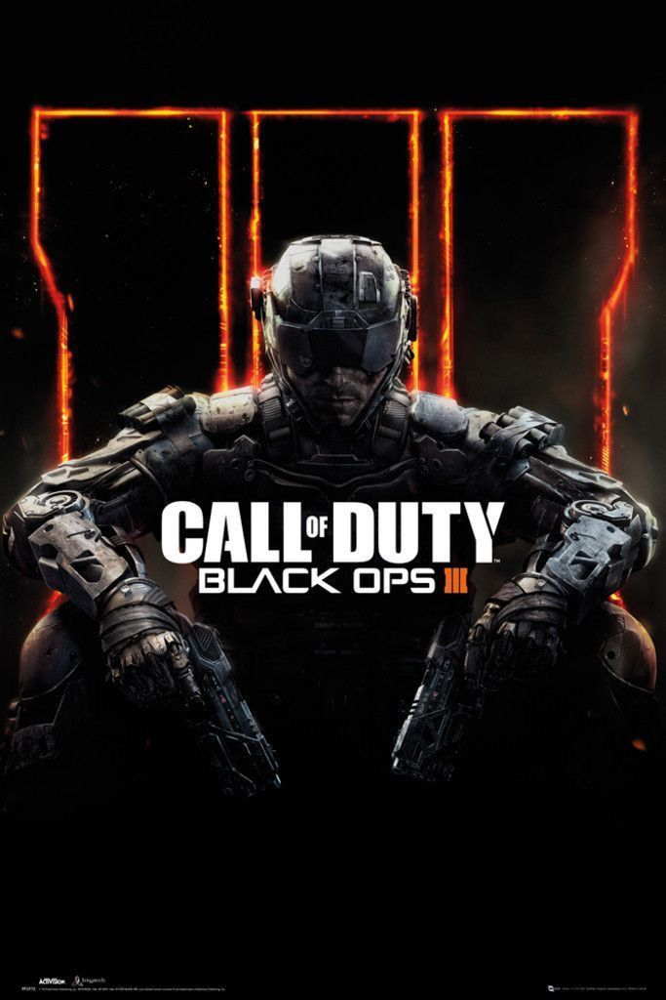
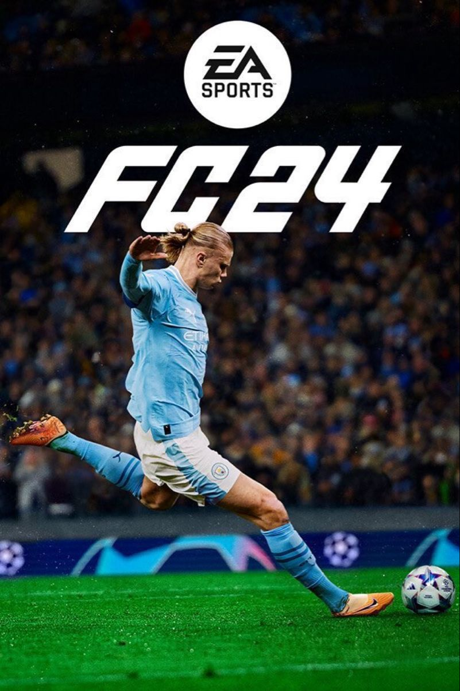
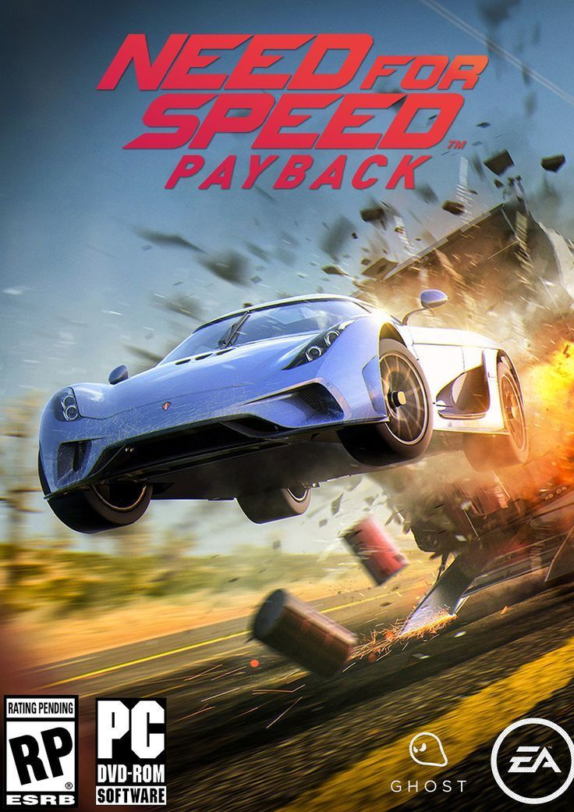
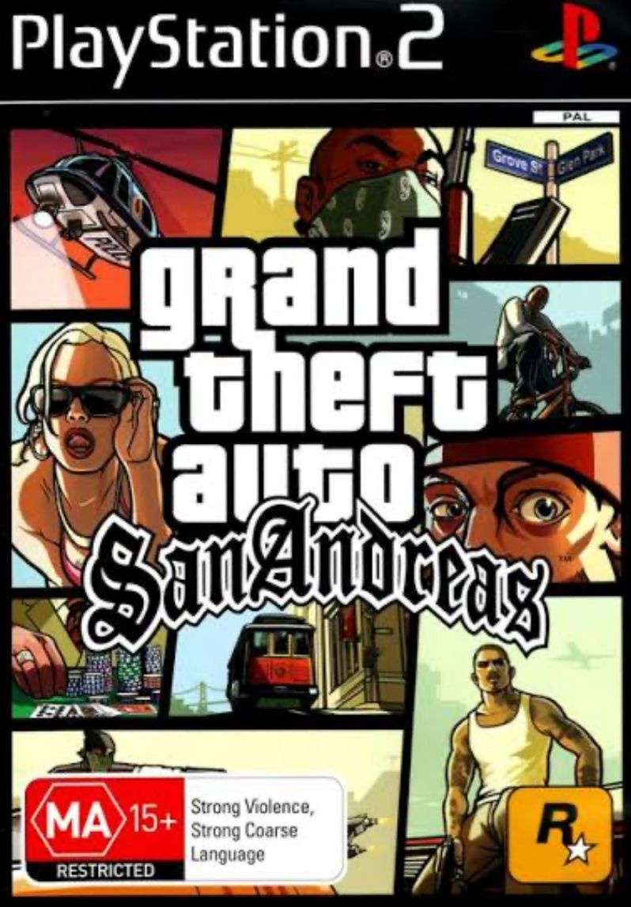
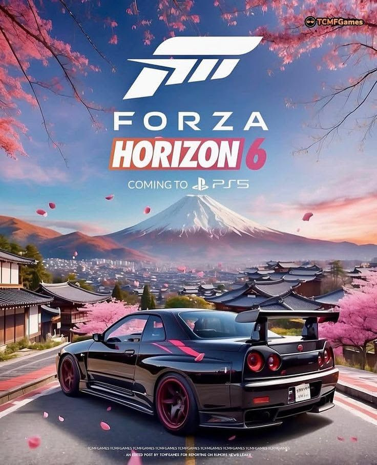

Blur is a 2010 arcade-style racing vehicular combat video game for Microsoft Windows, PlayStation 3 and Xbox 360. It was developed by Bizarre Creations and published by Activision. Blur features a racing style that incorporates real-world cars and locales with arcade-style handling and vehicular combat.

Call of Duty
The ongoing battle between JSOC and The Guild heats up as the balance of power shifts. With guidance from Karma, expert infiltrator Cole “Javelin” Donovan has successfully hacked into The Guild’s system using his C-Link device, allowing JSOC to turn The Guild’s own defenses against them. Will they use this newfound advantage to push toward victory and tear apart the oppressive conglomerate? Or will their enemies regroup in time for the counterattack?

FIFA 24
EA SPORTS FC is a sports game. It emerges as the next evolution in virtual football, continuing the legacy built by decades of FIFA titles despite losing its iconic branding. Following a split between Electronic Arts and FIFA in 2022, this fresh iteration ensures continuity by securing licensing agreements independently with over 300 clubs, retaining authenticity across players, teams, leagues, and competitions.

Need for Speed
Ready to own the streets? Get behind the wheel of iconic cars and floor it through Ventura Bay, a sprawling urban playground. Explore overlapping stories as you build your reputation – and your dream car – and become the ultimate racing icon.

Grand Theft Auto
* Grand Theft Auto: San Andreas follows Carl Johnson’s journey across three major cities to save his family and dominate the streets after being framed by corrupt cops.
* This mobile version features remastered high-resolution graphics, improved lighting, and enhanced character models specifically optimized for iOS devices.
* The game offers over 70 hours of gameplay with customizable controls, physical controller support, and cloud saves for Rockstar Social Club members.
* It is officially supported on a wide range of older Apple devices, from the iPhone 4s up to the iPad Pro, and supports multiple languages.

Forza Horizon 6
Discover the breathtaking landscapes of Japan in over 550 real-world cars and become a racing Legend in Forza Horizon's biggest open world driving adventure yet.